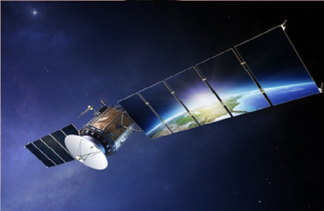
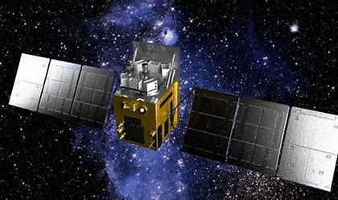
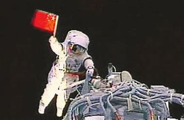
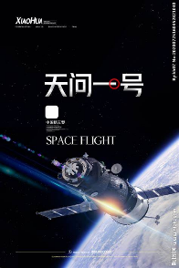

用“北斗 - 空间站 - 行星探测 - 下一阶段白皮书”串起一条成果叙事型的路演表达。

这比按年份平铺更适合路演：听众记住的是能力台阶，而不是资料堆砌。
从区域服务走向全球系统，标志自主时空基准能力成型。
从单次任务走向在轨长期运营，载人航天体系更完整。
从近地任务拓展到更远深空，形成更强的探测与组织能力。
原 PPT 里的多个主题页可以压成三块能力：导航、驻留、探测。
提供自主导航授时能力，也带动芯片、终端和行业应用扩展。

体现长期在轨运行、舱段协同与工程组织管理能力。

把复杂深空任务拆成轨道器、着陆器、巡视器等多模块协同。

原材料中提到的载人登月、重型火箭、深空探测，天然适合做成未来任务页。
火箭与运输系统升级是能力外推的物理前提。
月球、行星与深空探测是创新能力的放大器。
航天不是孤立成果，而是系统工程对产业的拉动。
航天叙事不能只停留在大词，要落到战略、产业和精神三类价值上。
自主可控的基础设施与重大工程能力，是国家安全与竞争力的底座。
航天牵引材料、制造、通信、控制、软件等多个产业链升级。
它把复杂工程变成共同想象，持续塑造技术信心与代际激励。
“真正适合路演的，不是把航天史讲完，而是把“能力如何被组织出来”讲清楚。”
素材来源：中国航天发展历程 PPT 内容重构